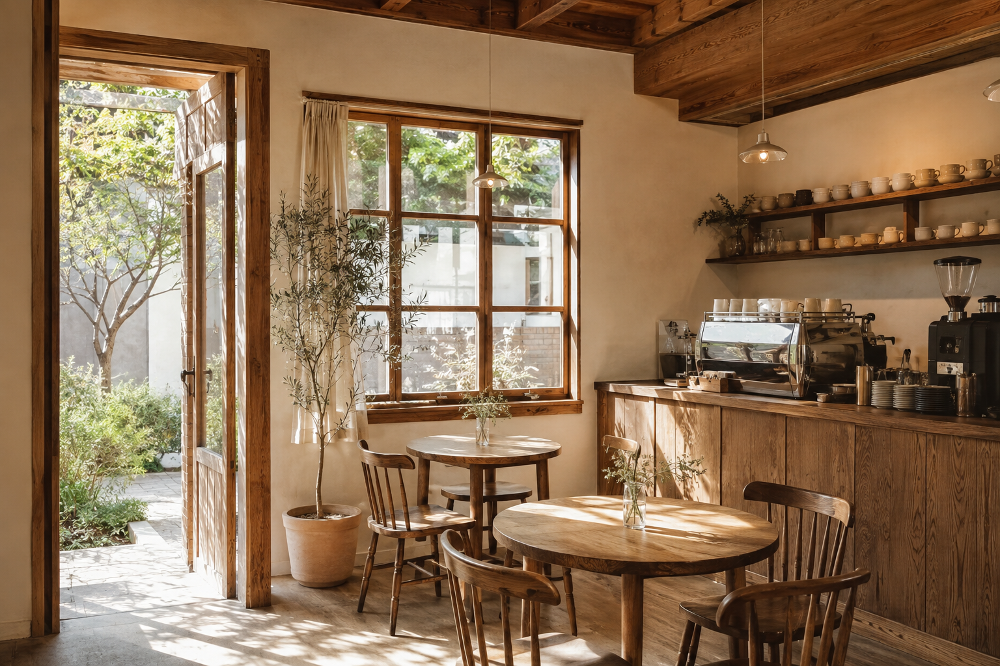

OUR LITTLE STORY
좋은 하루는,
작은 쉼에서
시작되니까요.
늘 무언가를 해야 하는 하루 속에서,
아무것도 하지 않아도 괜찮은 곳이 있으면 했어요.
좋아하는 잔에 커피를 내리고, 아침마다 빵을 굽고,
창가에 스미는 햇살을 기다립니다.
카페 하나는 그렇게 시작된 작은 공간입니다.
혼자 읽던 책 한 권도, 오랜 친구와의 이야기도.
당신의 속도로 머무는 시간이 되기를 바랍니다.